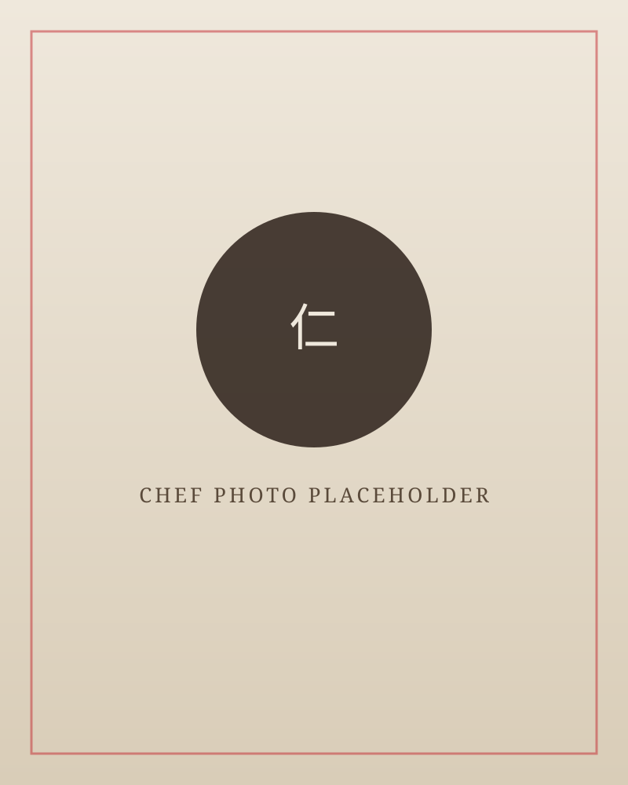
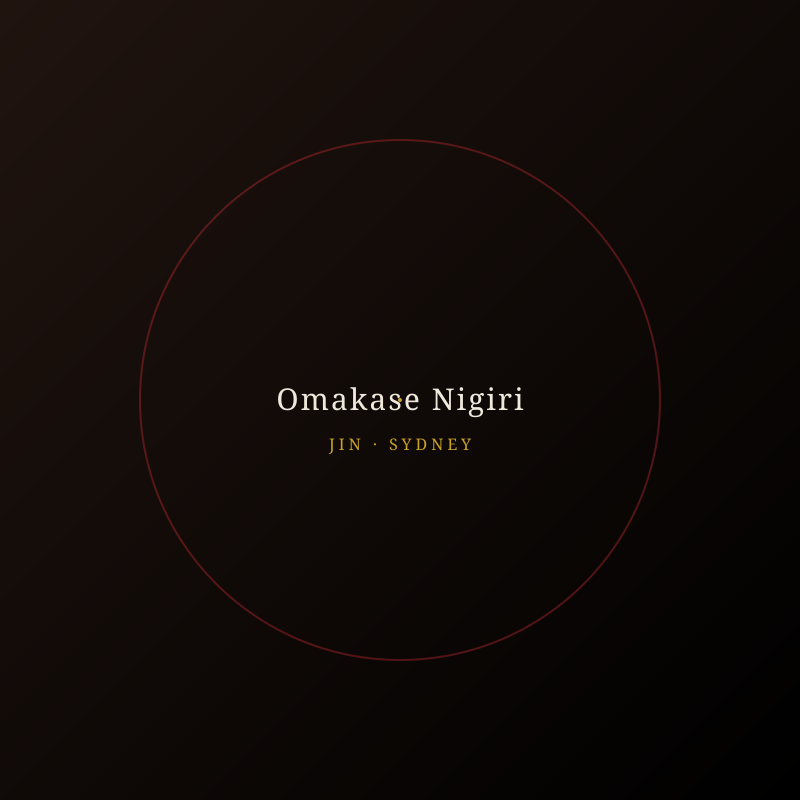
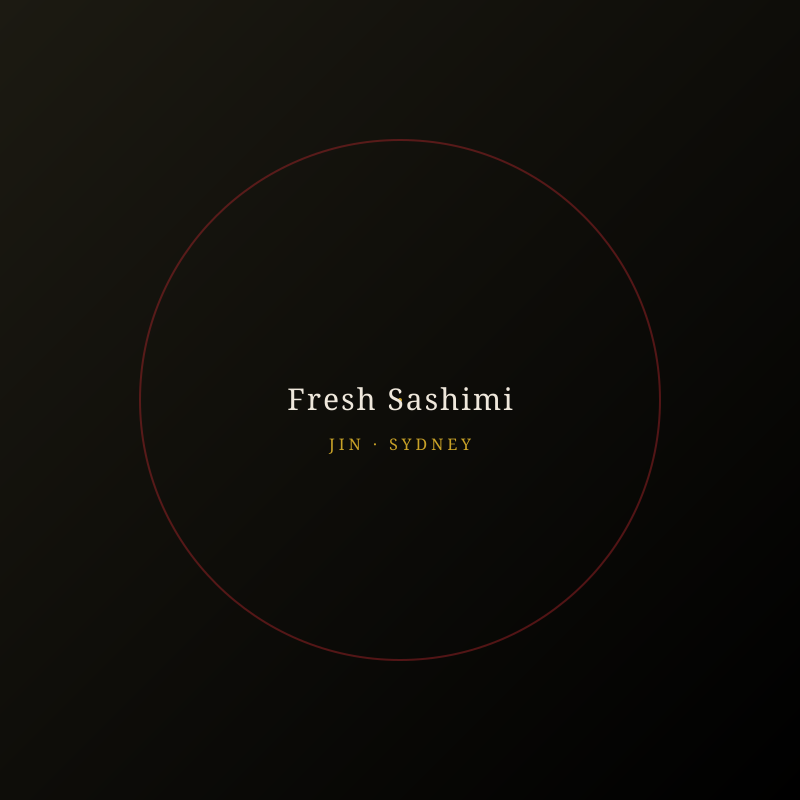
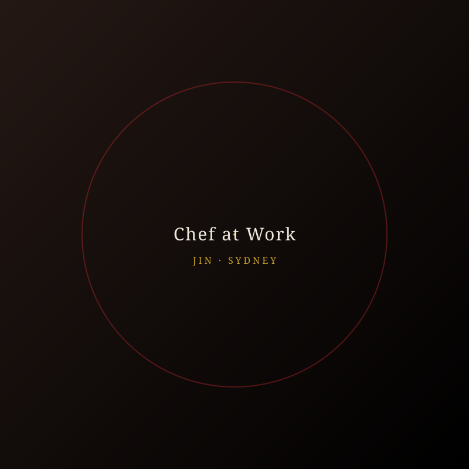
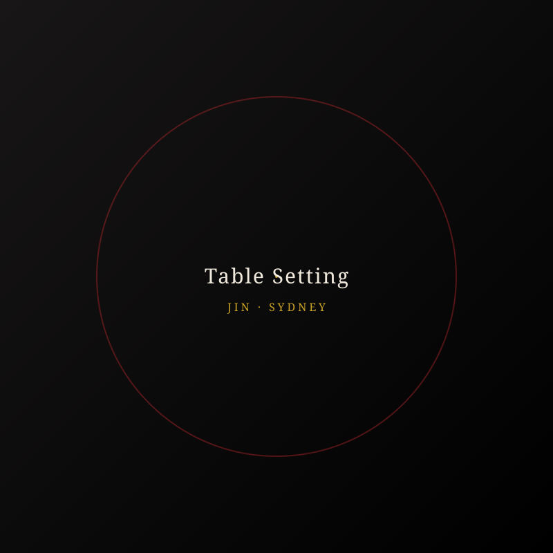
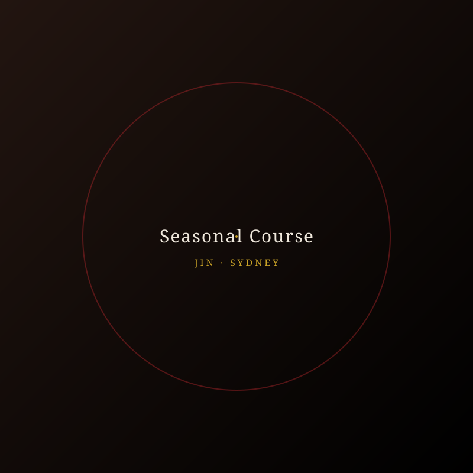
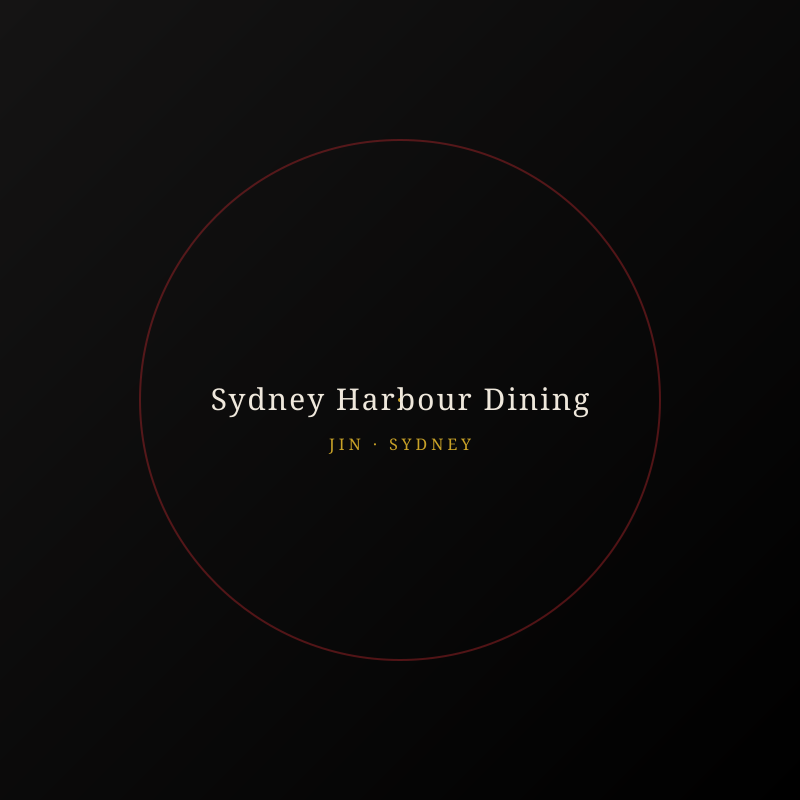

An intimate omakase experience, crafted by hand and served at your table — bringing the art of Edomae sushi to birthdays, celebrations and private dining across Sydney.
Reserve Your Experience
Trained in Tokyo's traditional Edomae style and refined over more than a decade behind the sushi counter, Jin brings a quiet precision to every piece he prepares. Now based in Sydney, he travels to bring the omakase counter experience directly into your home — sourcing the freshest seasonal fish and pairing technique with genuine hospitality.
Every course is prepared in front of you, course by course, so that each guest can witness the craft as closely as they taste it. It is not simply a meal — it is a shared moment, made memorable through simplicity and care.
Jin — Sushi ChefFrom intimate birthday dinners to milestone celebrations, every menu is tailored to the occasion and prepared fresh, right at your table.
A personalised omakase menu to make any birthday an unforgettable evening.
Live sushi counter experiences for gatherings of family, friends and colleagues.
An elegant, romantic dining experience crafted for special milestones.
Custom omakase courses designed around your taste, guests and setting.
A glimpse into recent omakase courses and private dining setups around Sydney.






Jin turned my husband's birthday into the best meal we've ever had at home. Every piece was flawless.
An incredible private dining experience. Professional, warm, and the sushi was restaurant quality — better, actually.
We booked Jin for our anniversary and it exceeded every expectation. Highly recommend for any special occasion.
Available for private events across Sydney. Get in touch to check availability and discuss your menu.